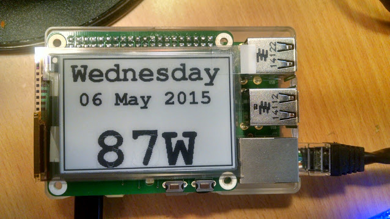

Hi everyone!
My name is Bernardino Morillo and I work for the Extremadura Government in Spain.
We are developing some projects related to energy efficiency at public and private homes.
Nowadays we are starting an exciting project using open energy monitor system and we are looking for a Spanish software developer team specialized on this technology in order to improve it including new features:
- simplify the interface to final users.
- improve 2 native android and IOS apps developed previously.
- program an advise and alarm app system (rules given by our technical team)
- integrate an adafruit 3,5" tft screen into open energy monitor and raspbian system.
Please, if anyone is interested to be taken into account in the developer selection process send me your email and phone and I will send your more info.
Bernardino Morillo: bernamorillo@gmail.com
tlf: 924 33 22 89.
PD: Only Spanish developers.
Re: Looking for an Emoncms and Raspberry Pi developer in Spain
I just sent out a tweet on OpenEnergyMon twitter. Good luck, sounds like a great project! Please feedback developments upstream if appropriate. We would really like to work with a skilled android developer to make a emoncms app
Re: Looking for an Emoncms and Raspberry Pi developer in Spain
Thank you Glyn!:
We will upload all the information. Actually we have 2 "new" sensors based on emonTH, they measure CO2 using Sensair (plugged on 220V) and Water consumption using a "hacked water meter" without a hall sensor, only with a contact bulb. They are very interesting. Also we are integrating 3,5" TFT Adafruit screen with huge results.
We keep going in order to achieve an easy to use Spanish open energy home metering system.
Thank you for the support and congrats for the kickstarter campaing results.
Re: Looking for an Emoncms and Raspberry Pi developer in Spain
Nice! Have you got a photo of the TFT? I've been looking for a emonGLCD replacement. I'm thinking a RasPi with LCD or recently I have been playing with e-paper could be a way to go:

https://www.kickstarter.com/projects/1372954669/e-paper-display-hat-for-the-raspberry-pi
Re: Looking for an Emoncms and Raspberry Pi developer in Spain
We are working with Pi TFT Adafruit screen because:
1- It is a touch screen, we can control an easy menu.
2- It is cheap (35$ per screen)
3- Raspberry Pi + PItft are 7W in total, not heavy consumption, and always Raspberry is plugged. Maybe for unplugged versions paper display could be a good choice, but tft has better performance. Also you can run Linux, internet, videos, anything,....
4- With raspberry 2 you have enough performance to run any application smoothly, if you have a screen, you have a complete computer in any case.
Nowadays we are looking for a php developer to make an application to take advantage of the entire system for user, with an administrator account and an energy efficiency advisory system. Then we will apply these improvements to the TFT screen, in the last phase, so now we only have the TFT running without any change.
Thanks for the support Glyn
Re: Looking for an Emoncms and Raspberry Pi developer in Spain
Hola Bernardino,
Mañana cuando esté en el trabajo te escribo un correo que ahora ando liado ;-)
Carlos